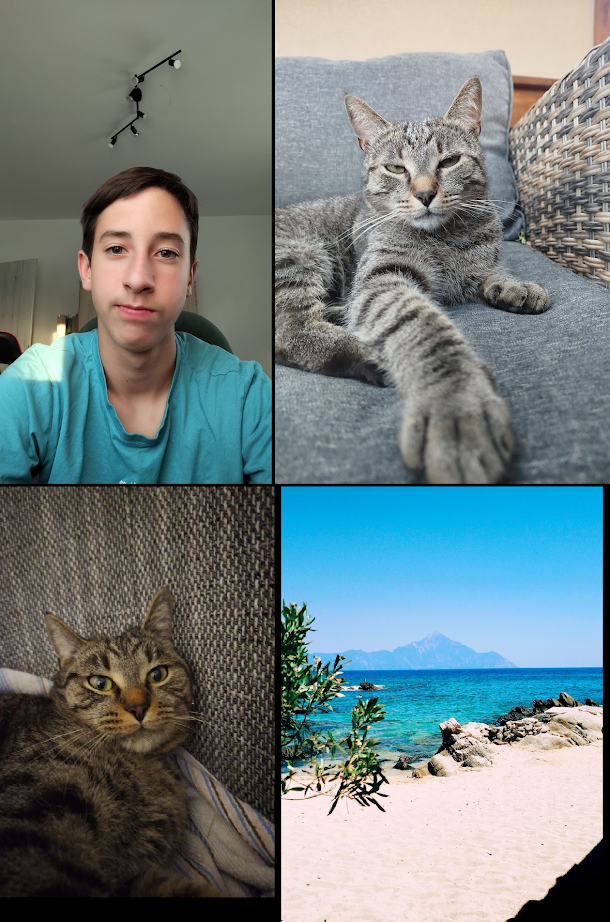

Szirmabesenyőben élek, van 2 testvérem és egy macskám. Hobbi szerűen focizok.
azért választottam a Kandót mert itt van a legjobb infó a Miskolcon, és azért az infó mert otthon szeretek a gép előtt munkálkodni.
